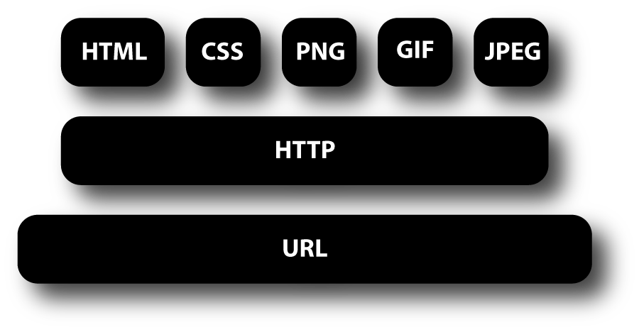

Assignment 5: Images
There are many reasons why you might want to add an image to a web page:
you might want to include a logo, photograph, illustration, diagram, or chart. There are several things to consider when selecting and
preparing images for your site, but taking time to get them right will make it look more
attractive and professional. In this chapter you will learn how to:
These pages demonstrate exactly how your browser handles the ALIGN attribute in an IMG tag.
LEFT This aligns the image to the left (allowing text to flow around its right-hand side).
RIGHT This aligns the image to the right (allowing text to flow around its left-hand side).
 There are around 10,000 living species of Picture that inhabit different ecosystems from the Arctic to the Antarctic. Many species undertake long distance annual migrations, and many more perform shorter irregular journeys.
The features that VS Code includes out-of-the-box are just the start. VS Code extensions let you add languages, debuggers, and tools to your installation to support your development workflow.
VS Code's rich extensibility model lets extension authors plug directly into the VS Code UI and contribute functionality through the same APIs used by VS Code. This topic explains how to find, install, and manage VS Code extensions.
There are around 10,000 living species of Picture that inhabit different ecosystems from the Arctic to the Antarctic. Many species undertake long distance annual migrations, and many more perform shorter irregular journeys.
The features that VS Code includes out-of-the-box are just the start. VS Code extensions let you add languages, debuggers, and tools to your installation to support your development workflow.
VS Code's rich extensibility model lets extension authors plug directly into the VS Code UI and contribute functionality through the same APIs used by VS Code. This topic explains how to find, install, and manage VS Code extensions.
